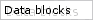

Введение
Объектно ориентированная система
Программа Blender имеет строгую объектно ориентированную структуру. Все параметры 3D-мира составлены из мелких блоков данных. Соединяя эти блоки, копируя и редактируя их, или используя их повторно, можно создавать сложные среды при минимальном использовании памяти.Основные блоки данных
Сцена (Scene)"Картина" 3D-мира. Содержит специфическую информацию для рендеринга (камера, разрешение) и связи с Объектами. Одни и те же объекты могут использоваться разными сценами. Кроме того, сцены можно объединять в набор сцен или "фильм".
Мир (World)
Этот блок хранит параметры неба, звезд, выдержки и других переменных среды.
Объект (Object)
Основной (элементарный) блок 3D-информации. Содержит информацию о положении, угле поворота, размере и матрицах трансформации. Его можно связывать с другими Объектами для создания иерархий или изменения формы. Объекты могут быть "пустыми" (Empty - только оси координат), но могут содержать и ObData, т.е. непосредственно саму 3D-информацию: Mesh (каркас), Curve (кривая), Lattice (решетка), Lamp (лампа) и т.д.
Кроме того, Объекты можно связывать с анимационными кривыми (Ipo) и Материалами (Materials).
Каркас (Mesh)
Содержит данные о каркасе, составленном из треугольных или квадратных граней: вершины, грани и перпендикуляры. Может иметь блок информации о ключевых кадрах для морфинга. Этот блок можно связывать с Материалами.
Кривая (Curve)
Эти данные могут использоваться для Текста (Text), кривых Безье (Bezier) или B-сплайнов (BSplines) и 3D NURBS-поверхностей. Этот блок также содержит ссылку на ключевые кадры, и его можно связывать с Материалами (Materials).
Материал (Material)
Это блок данных хранит информацию о таких "видимых" качествах Объекта как цвет, коэффициент отражения (reflectivity) и прозрачность. Его можно связать с восемью различными блоками Текстур (Texture).
Текстура (Texture)
Для задания текстур можно использовать растровые изображения (images), вычисляемые 3D-карты (procedural formulas - процедурные, параметрические формулы) или плуг-ины. Текстуры можно связывать с блоками Материал, Лампа и Мир.
Лампа (Lamp)
Хранит такие данные о свете, как параметры цвета и тени. Этот блок также можно связать с блоком Текстур.
Ipo
Основная система анимационных кривых. С помощью блоков Ipo возможна анимация Объектов (движение) и Материалов (анимация изменения цвета).